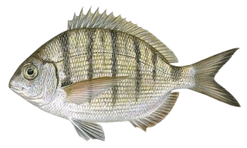

Sargo
| Cuando | Otoño |
|---|---|
| Lugar | Fondos rocosos, aguas turbias de color oscuro y agitadas. |
| Cebo | Gusanos, camarones, crustáceos y moluscos |
El sargo, una especie de pez común en aguas costeras, presenta características particulares tanto en sus hábitos como en su morfología, haciendo de él un interesante objetivo para la pesca mediante la técnica del surfcasting. Morfológicamente, el sargo exhibe un cuerpo alargado, plateado y comprimido lateralmente, con una boca pequeña equipada con dientes afilados. Su apariencia física lo adapta perfectamente a su entorno, especialmente en zonas rocosas y fondos arenosos. En cuanto a sus hábitos, el sargo tiende a habitar en aguas poco profundas, acercándose a la costa en busca de alimento. Prefiere áreas con presencia de rocas, desembocaduras de ríos y zonas con algas marinas, donde encuentra su principal fuente de alimento. La pesca exitosa de sargos mediante el surfcasting requiere comprender sus hábitos alimenticios y la elección estratégica del lugar. Su actividad alimenticia tiende a ser más intensa durante las mareas altas, y su cautela implica una espera paciente para atraerlo al cebo.